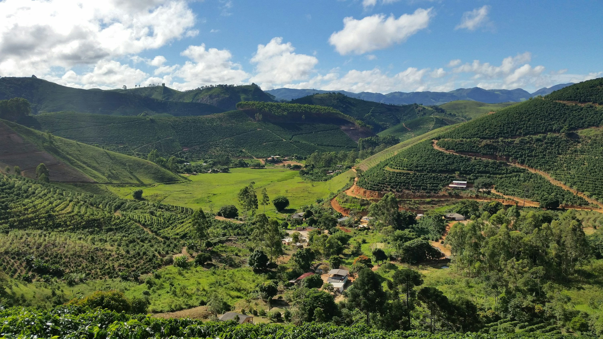
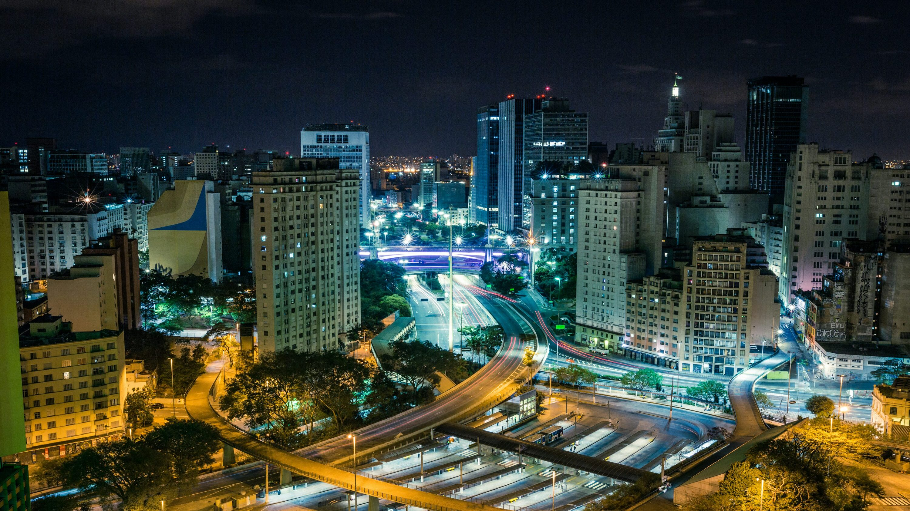

🌿 O Campo
O campo é responsável pela produção de alimentos, fibras e matérias-primas essenciais para a cidade. Além disso, mantém tradições culturais, modos de vida sustentáveis e preserva o meio ambiente.
- Produção agrícola e pecuária
- Alimentos frescos e orgânicos
- Práticas sustentáveis de cultivo
🏙️ A Cidade
A cidade transforma os produtos do campo em bens industrializados, desenvolve tecnologias para o setor agrícola e garante a distribuição eficiente de alimentos e recursos para toda a população.
- Mercados e centros de distribuição
- Indústrias de transformação
- Inovação tecnológica no agro